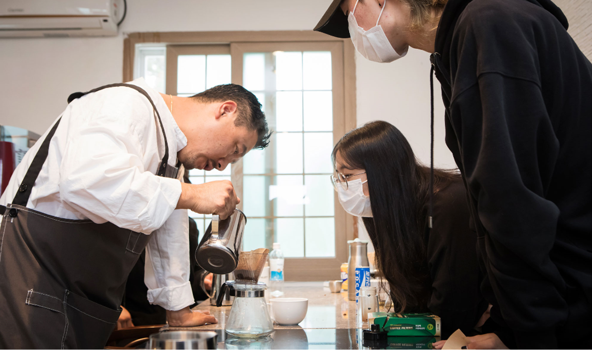

언론보도
[기획형 리빙랩] 엔도르핀 도는 홀로서기 수업
한 달에 한 번, 세상에 선보일 <어떤 제주(Which Jeju)>는 제호로부터 질문을 던진다.
“당신이 바라는 제주는 과연 어떤 모습일까?”에 이어 “내가 생각하는 제주는 무엇이지?”
각자 머릿속에 그려낸 제주와 함께 첫 장을 열어본다. 콘텐츠의 큰 범주는 4가지. 제주 내 지역혁신활동을 맛깔스럽게 담았다. 제주시 소통협력공간을 다각도로 조명할 기획물의 시작인 ‘기획이슈’와 팀 별로 주제를 잡아 더 나은 제주를 위해 탐구하는 ‘제주생활탐구’, 주민 주도로 공론과 실행을 시작부터 끝까지 책임지는 ‘제주생활공론’, 그리고 7월부터 10월까지 마을 이야기를 수집한 방송 프로그램 ‘찾아가는 톡톡카페’다. 이미 매월 2차례에 걸친 온라인 뉴스레터로 소개된 콘텐츠를 편집, 보강해 서재 한켠에 꽂아 두고두고 보고 싶은 소식지 형태로 탄생했다.

01. 기획이슈
내년에 선보이는 ‘제주시 소통협력공간’을 다각도로 조명할 기획물이 첫 포문을 열었다.
시민과 진짜 제주가 살아 숨쉬는 공간의 가상 체험기. 공간을 이해하고, 더불어 부푼 기대감을 안는다. 소식지 <어떤 제주(Which Jeju)> 의 다른 그 무엇|작성자 제주시 소통협력센터
02. 제주생활탐구
33개 팀이 탐구 여정을 떠난다. 지원자와 마주하며 커먼즈의 중요성을 피력한 심사위원 및
원도심의 다방 문화와 유적지 표지판을 중심으로 제주 역사를 재해석하는 1기 팀의 주옥 같은 달변들. 소식지 <어떤 제주(Which Jeju)> 의 다른 그 무엇|작성자